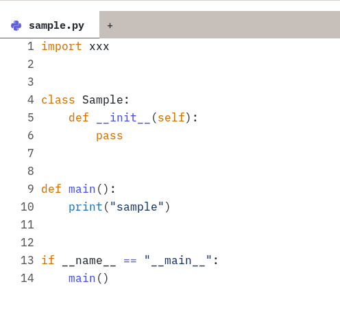
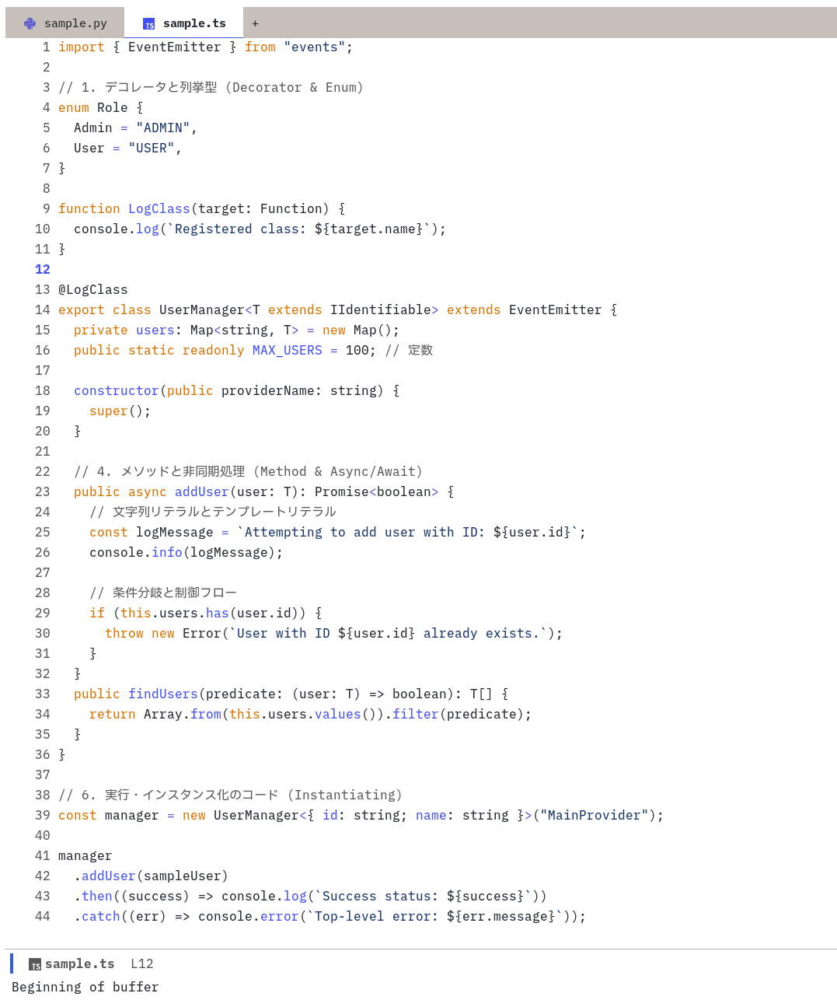
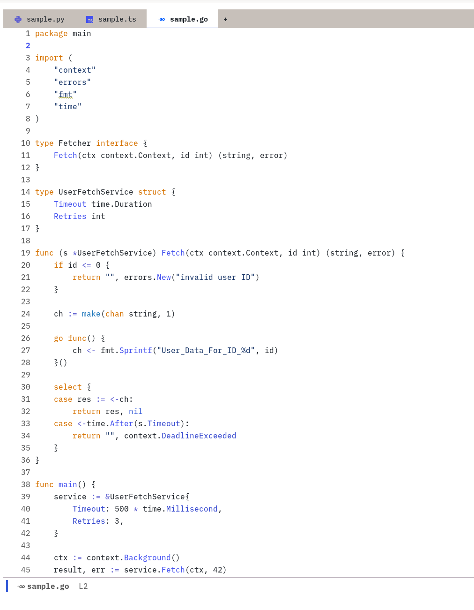

githubでコードを読むことも多いので、emacsのthemeもgithub風に寄せようと思う。
github風のthemeはいくつか配布されていが、最近のgithub themeっぽくなかったので、ef-themesをベースに設定していく。
https://github.com/protesilaos/ef-themes/tree/main https://github.com/protesilaos/modus-themes/tree/main
preview
設定しきれない部分もありつつ、まぁまぁ近づいたはず
-
python

-
typescript

-
golang

設定サンプル
(setq github-theme-palette '(
;; Basic value
(bg-main "#ffffff")
(bg-dim "#f2f2f2")
(fg-main "#24292f")
(fg-dim "#595959")
(fg-alt "#193668")
;; (bg-active "#c4c4c4")
;; (bg-inactive "#e0e0e0")
;; (border "#9f9f9f")
;; Uncommon accent foregrounds
;; (orange "#bc4c00")
(orange "#D67200")
(yellow-light "#fff8c5")
;; Special purpose
(bg-region yellow-light)
(bg-tab-current bg-main)
(bg-tab-bar bg-active)
(bg-tab-other bg-active)
;; Code mappings
(comment fg-dim)
(operator blue-faint)
(keyword orange)
(variable fg-main)
(type fg-main)
(property blue-warmer)
(string fg-alt)
(fnname blue-warmer)
;; General mappings
(cursor fg-dim)
))
(use-package ef-themes
:ensure t
:config
(setq ef-themes-mixed-fonts t
ef-themes-variable-pitch-ui t)
(modus-themes-load-theme 'ef-duo-light)
(custom-set-faces
'(font-lock-property-use-face ((t (:foreground "#3548cf"))))
'(corfu-default ((t (:background nil))))
'(corfu-current ((t (:background nil))))
'(corfu--cbar ((t (:background nil))))
)
:custom
(ef-duo-light-palette-overrides github-theme-palette)
)設定の確認
ef-themesではthemeごとにパレットが設定してある。
例えば、ef-duo-lightは以下のように設定されている
(defconst ef-duo-light-palette-partial
'((cursor "#1144ff")
(bg-main "#fff8f0")
(bg-dim "#f6ece8")
(bg-alt "#e7e0da")
...https://github.com/protesilaos/ef-themes/blob/main/ef-duo-light-theme.el
これをベースに、bg-mainやbg-dimの色を設定していくことにする。この方法が正攻法なのかは不明。
このパレットがどのようにfaceに対応しているかは、modus-themesに実装を見る。 modus-themesでは、bg-mainやcommentを各faceに色を設定している。
例えば、modus-themesのconsultは以下のようになっている。
;;;;; consult
`(consult-async-split ((,c :foreground ,err)))
`(consult-file ((,c :inherit modus-themes-bold :foreground ,info)))
`(consult-highlight-mark ((,c :background ,bg-search-static :foreground ,fg-search-static)))
`(consult-highlight-match ((,c :background ,bg-search-static :foreground ,fg-search-static)))
`(consult-imenu-prefix ((,c :foreground ,fg-dim)))
`(consult-key ((,c :inherit (bold modus-themes-fixed-pitch) :foreground ,keybind)))
`(consult-line-number ((,c :foreground ,fg-dim)))
`(consult-line-number-prefix ((,c :foreground ,fg-dim)))
`(consult-preview-insertion ((,c :background ,bg-dim)))https://github.com/protesilaos/modus-themes/blob/main/modus-themes.el#L4856
したがって、ベースのパレットを設定するとその他のfaceもいい感じに設定されるので、パレットをいい感じに設定していく。
基本的には、上記の設定サンプルの例で上げたような、bg-mainやbg-dimやCode mappingsの部分を設定すると概ね設定されるはず。
細かい部分はfaceを確認しつつ調整する。
例えば、typescriptのあるクラスにカーソルを当てて、M-x describe-font or M-x describe-charでどのfaceが設定されているか確認できる。